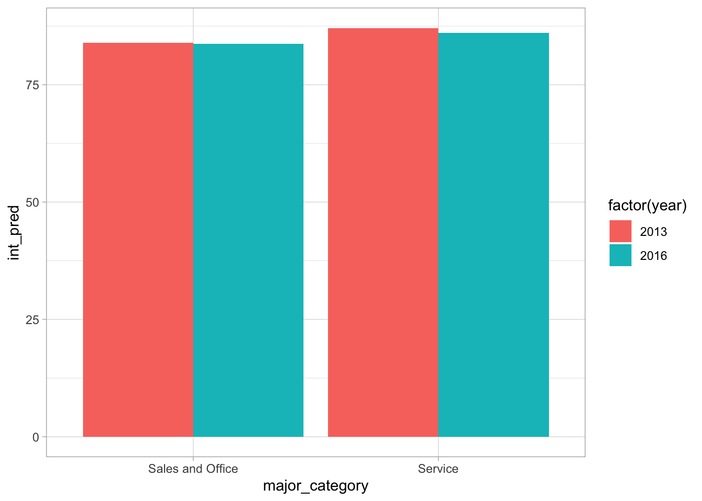

library(tidyverse)
library(moderndive)
theme_set(theme_light())MD 06 Debrief
# Read in the data
gender_employment <- read_csv("https://raw.githubusercontent.com/vaiseys/dav-course/main/Data/gender_employment.csv")Rows: 2088 Columns: 12
── Column specification ────────────────────────────────────────────────────────
Delimiter: ","
chr (3): occupation, major_category, minor_category
dbl (9): year, total_workers, workers_male, workers_female, percent_female, ...
ℹ Use `spec()` to retrieve the full column specification for this data.
ℹ Specify the column types or set `show_col_types = FALSE` to quiet this message.gender_employment <- gender_employment %>%
mutate(major_category = as.factor(major_category),
major_category = relevel(major_category, ref = "Management, Business, and Financial"))ptmodel <- lm(wage_percent_of_male ~ year + major_category,
data = gender_employment)
intmodel <- lm(wage_percent_of_male ~ year * major_category,
data = gender_employment)Let’s look at the tables. First, the parallel trends.
ptmodel |>
get_regression_table() |>
select(term, estimate) # just keep what I need# A tibble: 9 × 2
term estimate
<chr> <dbl>
1 intercept -307.
2 year 0.192
3 major_category: Computer, Engineering, and Science 6.32
4 major_category: Education, Legal, Community Service, Arts, and Media 5.76
5 major_category: Healthcare Practitioners and Technical 5.52
6 major_category: Natural Resources, Construction, and Maintenance 4.92
7 major_category: Production, Transportation, and Material Moving -1.31
8 major_category: Sales and Office 3.33
9 major_category: Service 6.08 Second, the interaction model.
intmodel |>
get_regression_table() |>
select(term, estimate) # just keep what I need# A tibble: 16 × 2
term estimate
<chr> <dbl>
1 intercept -1.37e+3
2 year 7.2 e-1
3 major_category: Computer, Engineering, and Science 1.00e+3
4 major_category: Education, Legal, Community Service, Arts, and Media 1.94e+3
5 major_category: Healthcare Practitioners and Technical 9.06e+2
6 major_category: Natural Resources, Construction, and Maintenance -2.89e+3
7 major_category: Production, Transportation, and Material Moving 1.58e+3
8 major_category: Sales and Office 1.61e+3
9 major_category: Service 2.14e+3
10 year:major_categoryComputer, Engineering, and Science -4.95e-1
11 year:major_categoryEducation, Legal, Community Service, Arts, and M… -9.59e-1
12 year:major_categoryHealthcare Practitioners and Technical -4.47e-1
13 year:major_categoryNatural Resources, Construction, and Maintenance 1.44e+0
14 year:major_categoryProduction, Transportation, and Material Moving -7.84e-1
15 year:major_categorySales and Office -7.98e-1
16 year:major_categoryService -1.06e+0What’s the best way to get predictions? Not by hand! I wanted you to do that for understanding but here’s a better way.
pred_df <- tribble( # tribble allows easy manual data entry
~year, ~major_category,
2016, "Service"
)
pred_df# A tibble: 1 × 2
year major_category
<dbl> <chr>
1 2016 Service You can get predictions on this “new” dataset.
predict(ptmodel,
newdata = pred_df) 1
86.85299 Better yet, you can add the predictions to the data frame.
pred_df <- pred_df |>
mutate(pt_pred = predict(ptmodel, newdata = pred_df),
int_pred = predict(intmodel, newdata = pred_df))
pred_df# A tibble: 1 × 4
year major_category pt_pred int_pred
<dbl> <chr> <dbl> <dbl>
1 2016 Service 86.9 86.1You can create more complicated prediction data frames, too.
pred_df2 <-
expand_grid(
major_category = c("Service", "Sales and Office"),
year = c(2013, 2016)
)
pred_df2# A tibble: 4 × 2
major_category year
<chr> <dbl>
1 Service 2013
2 Service 2016
3 Sales and Office 2013
4 Sales and Office 2016Then you get the same procedure
pred_df2 <- pred_df2 |>
mutate(pt_pred = predict(ptmodel, newdata = pred_df2),
int_pred = predict(intmodel, newdata = pred_df2))
pred_df2# A tibble: 4 × 4
major_category year pt_pred int_pred
<chr> <dbl> <dbl> <dbl>
1 Service 2013 86.3 87.1
2 Service 2016 86.9 86.1
3 Sales and Office 2013 83.5 83.9
4 Sales and Office 2016 84.1 83.7Then you could plot.
ggplot(pred_df2,
aes(x = major_category,
y = int_pred,
group = factor(year),
fill = factor(year))) +
geom_col(position = "dodge")